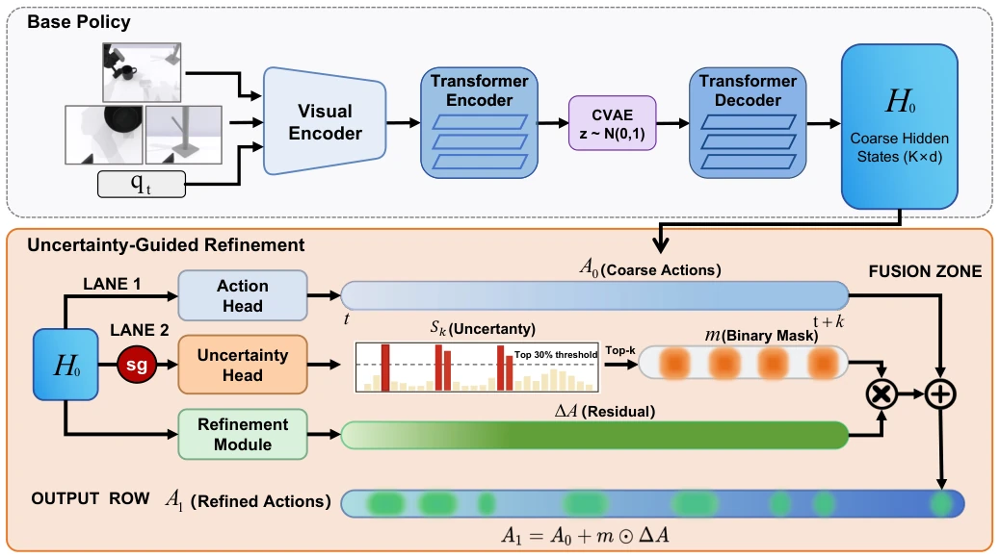
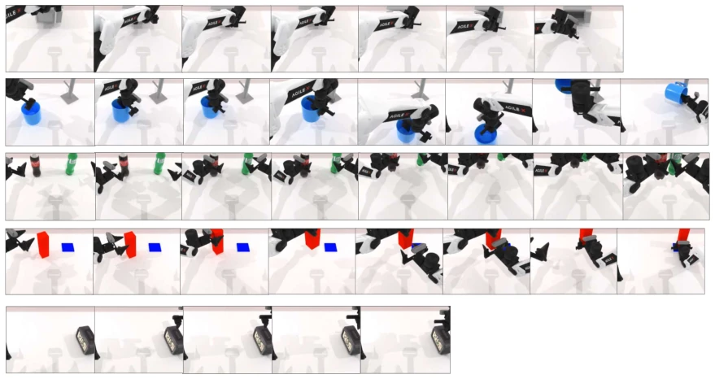

This paper prescribes a "precision irrigation" formula for the ACT strategy, specifically targeting "local failures". The authors keenly point out that long-horizon operation failures are often not total defeats, but rather stuck at a few key frames (e.g., contact, handover), while previous "full repair" or "random repair" are purely a waste of compute. The UGR framework, through uncertainty guidance, only repairs the worst 30% of frames, indeed having a bit of the cleverness of "leveraging small effort to move heavy weight". However, this method is currently limited to simulation environments and relies on a fixed sparse ratio (30%); if deployed on real robots, facing sensor noise and dynamic changes, whether this "uncertainty" can still guide precisely is indeed questionable. Additionally, blowing up the uncertainty head and decoupled design as so fresh and unique, actually essentially adding a "gatekeeper" to the residual network; although high technical content, it has not reached the level of disruptive innovation, belonging to the typical "fine-grained surgery on mature architectures".
Visual-motor imitation learning in embodied intelligence faces the chronic problem of error accumulation in long-horizon tasks. Although chunk-based action prediction methods (such as ACT [3]) alleviate some problems by predicting extended time series, existing research often assumes prediction errors are uniformly distributed in time, leading to inefficiency in full-chunk refinement or random block refinement [15]. In fact, failures of strategies like ACT often concentrate on a few key time steps, such as transition moments involving contact, alignment, or object handover, rather than universal failure of the entire Chunk. This local error characteristic makes uniform allocation of refinement resources both inefficient and untargeted. Furthermore, existing residual policy learning [15] and diffusion policies [4] lack the ability to distinguish difficulty levels of different time steps within a Chunk, unable to adaptively adjust correction strength based on the dynamic difficulty of input data. Therefore, a sparse refinement mechanism that can identify and only correct the most difficult time steps is urgently needed to maximize policy robustness under limited computational budget.

Fig. 2. Overview of the proposed uncertainty-guided sparse refinement pipeline. ACT first predicts a coarse action chunk and the corresponding decoder hidden states. A lightweight uncertainty head reads the detached coarse hidden states and predicts one scalar uncertainty score for each timestep. The top-⌊ρK⌋ timesteps are selected to form a binary refinement mask. Residual correction is applied only to the selected timesteps, while the remaining timesteps keep the coarse prediction unchanged.
This paper proposes an Uncertainty-Guided Sparse Refinement (UGR) framework, core adopting a "coarse-to-fine" architecture. First, the base ACT strategy predicts a complete action Chunk (Coarse Prediction), generating corresponding decoder hidden states. Next, a lightweight Uncertainty Head is introduced, which only reads the coarse prediction hidden states processed by Stop-Gradient, predicting a scalar uncertainty score (Log-variance) for each time step, thereby decoupling the gradient flow of uncertainty estimation and action prediction, ensuring uncertainty serves only as a selection signal rather than a supervision signal. Subsequently, the system selects the Top-30% most uncertain (i.e., most difficult) time steps based on predicted uncertainty scores, constructing a Binary Mask. Finally, the residual refinement module generates residual corrections only for time steps selected by the mask, added to the coarse prediction to obtain the final action; time steps not selected directly retain the coarse prediction results. Training objectives include coarse prediction loss, refinement loss, uncertainty loss based on heteroscedastic regression, and CVAE KL divergence regularization term. This design allows the model to dynamically allocate correction budget based on current input, concentrating compute on true "pain points", rather than uniform net casting or random repair.
Experiments were conducted on five dual-arm manipulation tasks (e.g., opening microwave, hanging cup, passing blocks, etc.) on the RoboTwin benchmark, using 50 demonstration samples. Baselines include ACT [3], Diffusion Policy [4], and ACT family variants (full-chunk refinement, random block refinement). Evaluation metric is task success rate. Results show UGR achieved the best success rate in four out of five tasks, with a maximum improvement of 13% (absolute value) compared to the ACT baseline. Ablation study (Table II) further confirms that on the clicking alarm clock task, uncertainty-guided refinement (41%) significantly outperforms full-chunk refinement (31%) and random block refinement (28%), even outperforming variants with only added causal masks. This indicates that data-dependent time step selection mechanisms are more effective than position-agnostic sparse refinement. However, experiments were conducted only in simulation environments, and used a fixed sparse ratio (30%), involving no real robot validation or hyperparameter adaptive adjustment.

Fig. 3. Representative simulation rollouts from the five RoboTwin manipulation tasks used in our evaluation. Each row shows frames from one task: open microwave, hanging mug, pick dual bottles, handover block, and click alarmclock.